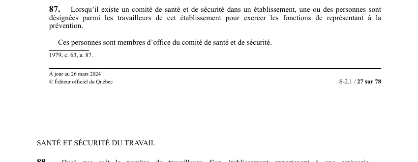

art-87-LSST : désignation du représentant à la prévention
Un article du wiki ⚖️ Recueil législatif
En bref
Là où un comité de santé et de sécurité existe, le poste de représentant à la prévention n'est pas facultatif : au moins une personne doit être désignée, et elle siège automatiquement au comité.
- Visé : travailleurs de l'établissement · Nature : obligation
- Condition d'application unique : l'existence d'un comité de santé et de sécurité dans l'établissement.
- Une ou plusieurs personnes sont désignées, obligatoirement parmi les travailleurs de ce même établissement.
- Leur rôle : exercer les fonctions de représentant à la prévention.
- Effet automatique : ces personnes sont membres d'office du comité de santé et de sécurité, sans élection distincte.
- Mode de désignation renvoyé à art. 89 : le même que pour les représentants des travailleurs au comité.
🌐 LegisQuébec · 📄 PDF officiel (page 27)
Texte officiel : capture du PDF
{kind=link}

Toucher l'image pour l'agrandir🔗 Ouvrir a cette page : LSST.pdf : page 27 · texte a jour au 26 mars 2024
Voir aussi
- art. 85 : comité de l'ensemble de l'établissement · les représentants des travailleurs de chaque comité désignent ceux du comité de l'ensemble.
- art. 86 : programme de prévention et comités · le programme de prévention tient compte des responsabilités de chaque comité formé au sein de l'établissement.
- art. 88 : représentant sans comité constitué · désignation possible sur avis écrit de l'association accréditée ou d'au moins 10 % des travailleurs, avec copie à la Commission.
- art. 89 : mode de désignation du représentant · s'applique aux cas des articles 87 et 88.
- art. 29 : obligations de l'employeur envers le représentant · le représentant est réputé être au travail lorsqu'il exerce ses fonctions.
- ↑ Loi : LSST
Pages qui pointent ici (14)
- Activation du comité SST Recueil législatif
- art-1-LSST : définitions générales de la loi Recueil législatif
- art-161-LMRSST : modifie l'art. 87 et 88 LSST Recueil législatif
- art-85-LSST : comité de l'ensemble de l'établissement Recueil législatif
- art-86-LSST : programme de prévention et comités multiples Recueil législatif
- art-88-LSST : désignation du représentant par avis écrit Recueil législatif
- art-89-LSST : mode de désignation du représentant Recueil législatif
- Index par profil Recueil législatif
- Le comité SST et le représentant à la prévention, à quoi ils servent Droit du travail
- LMRSST : Chapitre II : Modifications à la LSST Recueil législatif
- LSST Recueil législatif
- LSST : Chapitre VI : Représentant à la prévention Recueil législatif
- PDFs de jurisprudence et de doctrine Recueil législatif
- Représentant à la prévention Recueil législatif